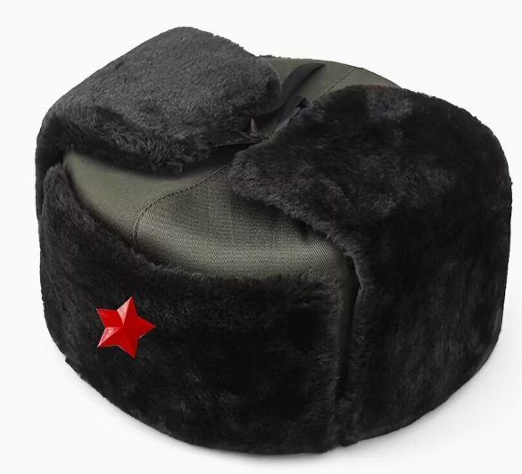
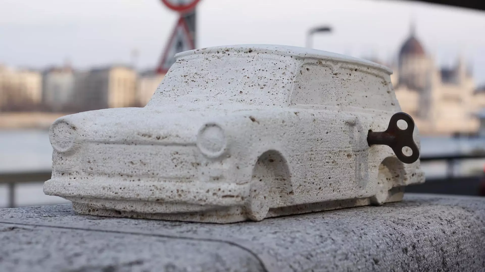
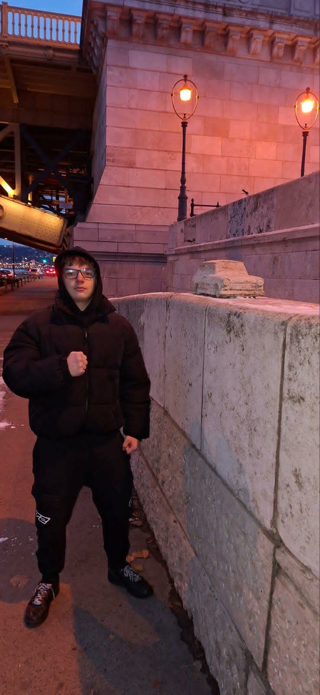

A Usánka miniszobor a Kolodko Mihály ukrán–magyar gerillaszobrász egyik legismertebb apró alkotása volt, amely egy kis bronz orosz téli sapkát (usánkát) ábrázol, és 2019 novemberében a budapesti Szabadság tér közelében kapott helyet, párnán fekve, mint reflexió a mellette álló szovjet hősi emlékműre és a XX. századi történelemre. A mű Kolodko jellegzetes, alig néhány centis miniatűr formanyelvét használta, amellyel a városi térben rejtett „kincsként” várta a járókelők felfedezését.
A szobor rövid időn belül politikai vitát váltott ki: egy országgyűlési képviselő leszerelte és a Dunába dobta, mert önkényuralmi jelképként értelmezte. Kolodko erre reagálva először egy mini baltát helyezett el ugyanazon a helyen, majd később újabb változatot alkotott, amelyen az usánka békalábakon „mászik” ki a partra, humorosan reflektálva a történtekre és arra, hogy a művészet a közbeszéd részévé válik.
Ez az alkotás jól példázza Kolodko munkáinak jellegét: kis léptékben nagy történetet és társadalmi gondolatot közvetítenek, gyakran épp azzal, hogy váratlan helyeken bukkannak fel és párbeszédet indítanak a nézőkkel.

A Trabant miniszobor egy apró bronz alkotás, amely Budapesten városi környezetben kapott helyet, és a Kolodko Mihály által készített miniszobor-sorozat része, amely a mindennapi terekbe csempészett művészet révén szólítja meg a járókelőket. A szobor egy Trabantot ábrázoló figurát jelenít meg, amely egyszerre idézi a kelet-európai retró hangulatot és a kortárs városi játékosságot, miközben a részletgazdagság a miniatűr méret ellenére lenyűgöző élményt nyújt.
Az alkotás célja, hogy a szemlélőt megállásra, felfedezésre és elgondolkodásra ösztönözze, miközben a bronz anyag tartósságot és eleganciát biztosít, az apró méret pedig intimitást és játékosságot kölcsönöz a városi térben. A Trabant miniszobor Kolodko Mihály művészetének lényegét hordozza: a humor, a kortárs esztétika és a kulturális utalások találkozását, miközben a városi környezetbe integráltan retró utalásként és kortárs művészeti gesztusként is értelmezhető, a járókelő számára pedig egyszerre élményt, játékot és vizuális örömöt nyújt.

